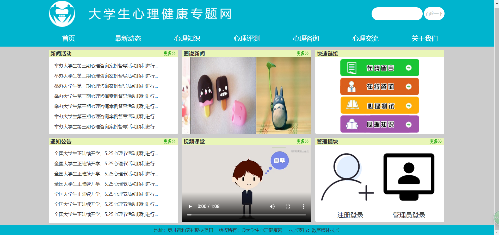

喻峰

2020年应届生 | 22岁 | 数字媒体技术 | 河南牧业经济学院 | 本科 | 应聘前端开发
手机：17601439446 | 微信：vue000 | 邮箱：vue000@hotmail.com
Github: https://github.com/yf2050
写博客: https://blog.csdn.net/abc465200 原创文章30篇
掌握技能
- ● 熟悉HTML(5)和常用CSS(3),文档流、盒模型、Flex和Grid布局、CSS3动画、过渡
- ● 熟悉移动端兼容，有相关响应式开发经验
- ● 熟悉原生JavaScript，原型prototype、闭包、事件冒泡和捕获、事件委托、数组splice()等API
- ● 熟悉前后端分离原理，AJAX四步骤、跨域CORS和JSONP、前端路由
- ● 熟悉命令行和使用Git进行版本控制和协作开发 && Npm && Yarn
- ● 了解ES6语法，let、Promise、this、析构赋值
- ● 了解axios库，JSON数据存储格式
- ● 了解前程模块化、webpack和parcel等前端打包类工具，loader、Plugin的配置和优化
- ● 了解HTTP协议及浏览器工作原理，并进行前端性能优化，略懂后端，可以写点 PHP 和 Node.js
其他技能
- ● 在日常使用中，能够利用Chrome dev tools进行简单的项目调试,能够科学上网。
- ● 熟悉Vscode、Webstrom编辑器以及使用MarkDown进行文档的写作。
- ● 能用PS进行前端页面所需的切图，熟悉PR、PS、AI、AE、AU
项目经历
-
△基于H5的大学生心理健康网 (毕设)
作品链接● 这是一个基于前端和后端搭建的线上多页面网站。
● 在大学中未安排数据库课程情况下，自学Mysql数据库的建表、Sql语句的增删改查,了解前后端逻辑。
● 网站用动态语言和flex布局编写完成后，进行了阿里云服务器和域名搭配，现于宝塔上进行管理访问。
● 主要功能包括注册登录、留言功能、视频图片展示、后台管理系统、移动端兼容在宽500px以下等。
-
△画一个皮卡丘
Github 作品链接● 这个项目动态演示绘制皮卡丘，并可以进行速度控制，以中间布局，左右对称。
● 大量使用伪元素、CSS3和ES6、相对定位、监听绑定和取消监听、webpack打包等
-
△一个键盘导航网站
Github 作品链接● 这个项目使用原生JavaScript，监听键盘事件，实现一个可自定义的导航网。
● 同时加入了百度搜索功能，加深了对浏览器LocalStorage的理解
● 技术栈: JavaScript + HTML5 + LocalStorage + CSS3 + Media queries
-
△Canvas画板
Github 作品链接● 使用HTML5的Canvas标签，实现的画板项目，对移动端兼容进行了实践。
● 能在桌面端和移动端使用，可以图像形式保存画板内容。
● 技术栈: JavaScript + HTML5 + Canvas + CSS3
-
△自己封装简单DOM库
作品链接● 实现元素选择、元素创建、元素删除、元素修改、事件委托、节点排名等常见功能
实习经历
-
湖北小黑课堂教育科技有限公司
运营
~- l 负责本校线上运营社群，帮助同学解决计算机二级相关问题。
- l 期间联系校园墙和各班级负责人建群协作，资源共享，帮助几百位校友自学二级课程。
- l 积极完成实习任务，个人能力突出，实习结束时被评为“小黑课堂优秀实习生”。
校园经历
-
- l 在校参加院校书画小组并担任小组组长，协助老师组织安排校园活动。
- l 在校参加网易校园自媒体"百人计划"，发布文章浏览量破万，获得“网易优秀小编”荣誉。
- l 在校获得校园书画大赛二等奖、计算机操作员、计算机二级证书、 校园营销大赛优秀奖等。
自我评价
- 本人大二起学前端，积累一些开发经验，用过各类主流前端技术栈。
- 关注互联网前沿技术，爱倒腾，经常浏览MDN和优秀博客，学无止境。